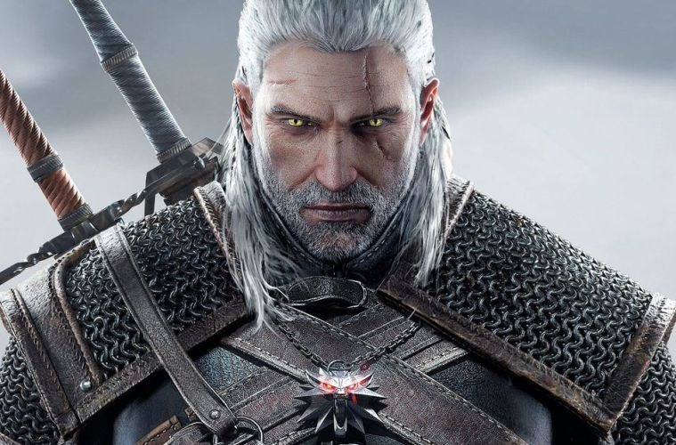

Main characters

Geralt of Rivia
Geralt of Rivia was a legendary witcher of the School of the Wolf active throughout the 13th century. He loved the sorceress Yennefer, considered the love of his life despite their tumultuous relationship, and became Ciri's adoptive father.
During the Trial of the Grasses, Geralt exhibited unusual tolerance for the mutagens that grant witchers their abilities. Accordingly, Geralt was subjected to further experimental mutagens which rendered his hair white and may have given him greater speed, strength, and stamina than his fellow witchers.
Despite his title, Geralt did not hail from the city of Rivia. After being left with the witchers by his mother, Visenna, he grew up in their keep of Kaer Morhen in the realm of Kaedwen.
Cirilla
Cirilla Fiona Elen Riannon (better known as Ciri), was born in 1252 or 1253,[4] and most likely during the Belleteyn holiday.[5] She was the sole princess of Cintra, the daughter of Pavetta and Emhyr var Emreis (who was using the alias "Duny" at the time) as well as Queen Calanthe's granddaughter.
After Geralt of Rivia helped lift Duny's curse, Duny asked what reward the witcher would like and Geralt evoked the Law of Surprise, as it turned out Pavetta was pregnant with Ciri, unbeknownst to Duny.
Yennefer of Vengerberg
Yennefer of Vengerberg, born on Belleteyn in 1173, was a sorceress who lived in Vengerberg, the capital city of Aedirn. She was Geralt of Rivia's true love and a mother figure to Ciri, whom she viewed like a daughter to the point that she did everything she could to rescue the girl and keep her from harm.
She helped advise King Demavend of Aedirn (though was never a formal royal advisor), a close friend of Triss Merigold, and the youngest member of the Supreme Council of Sorcerers within the Brotherhood of Sorcerers. After its fall, the Lodge of Sorceresses attempted to recruit her, but they didn't see eye to eye as the Lodge wanted to advance their own political agenda by using Ciri.
Some more info
The Witcher by Andrzej Sapkowski is a series of fantasy short stories (collected in two books, except for two stories) and five novels about the witcher Geralt of Rivia. The books have been adapted into a movie and two television series, a video game series (The Witcher), a comic book and others. The novel series (excluding the short stories) is also called the Witcher Saga or the Blood of the Elves saga.
Books:
The Last Wish(1993)
Sword of Destiny(1992)
Coś się kończy, coś się zaczyna(2000)
Blood of Elves (1994)
Time of Contempt (1995)
Baptism of Fire(1996)
The Tower of the Swallow (1997)
The Lady of the Lake(1999)
Season of Storms(2013)
Games:
The Witcher(2007)
The Witcher 2: Assassins of Kings(2011)
The Witcher 3: Wild Hunt(2015)
Gwent: The Witcher Card Game(2016)
Thronebreaker: The Witcher Tales(2018)